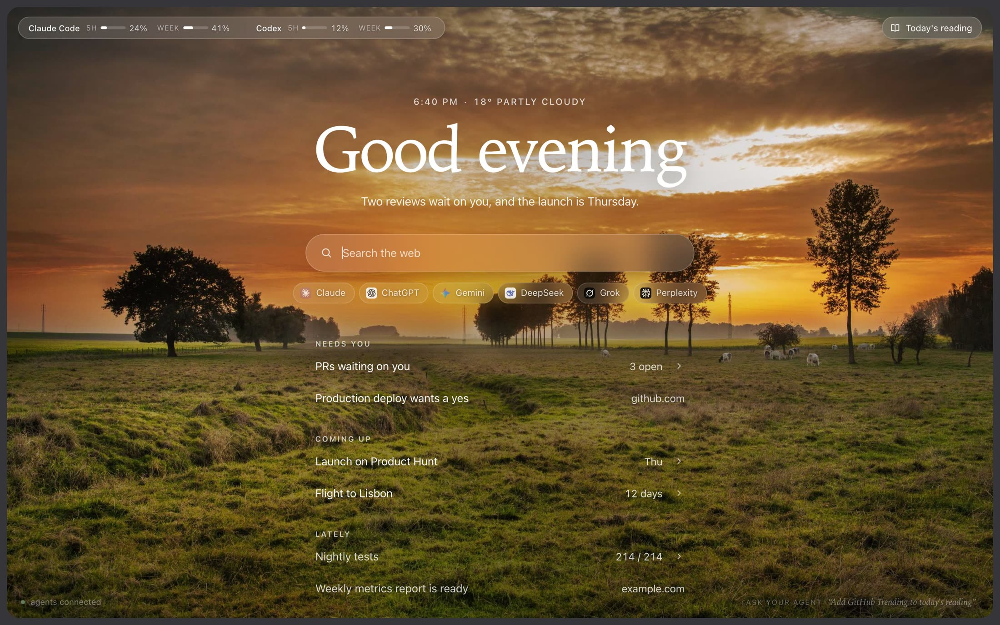
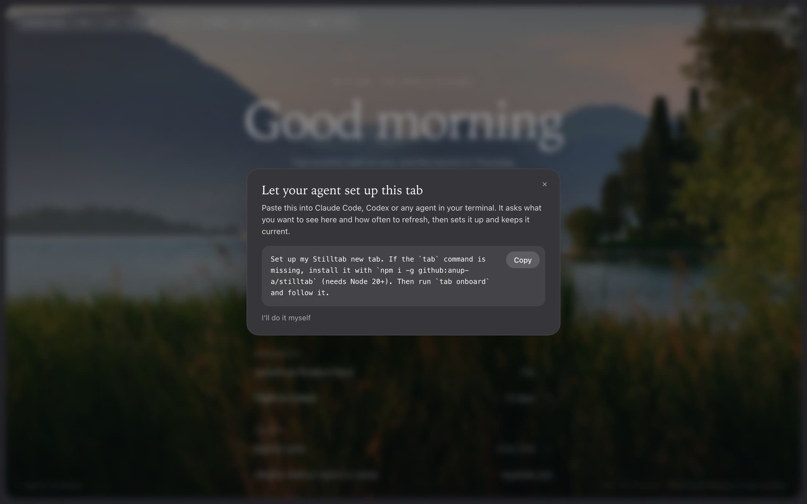
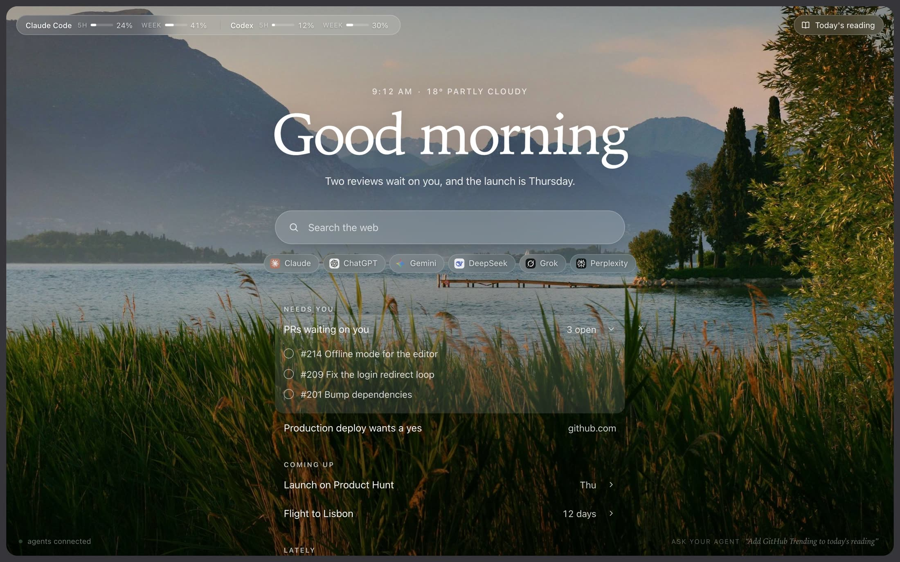
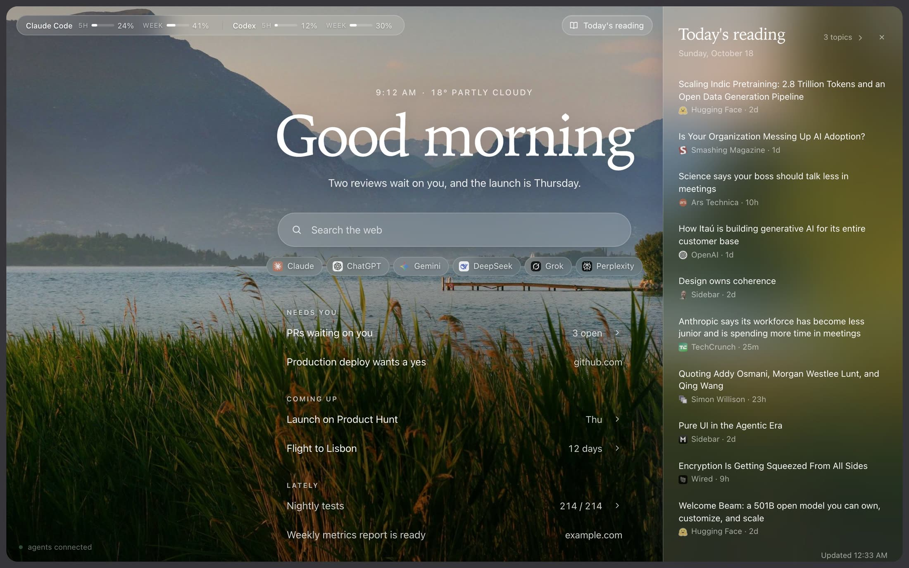
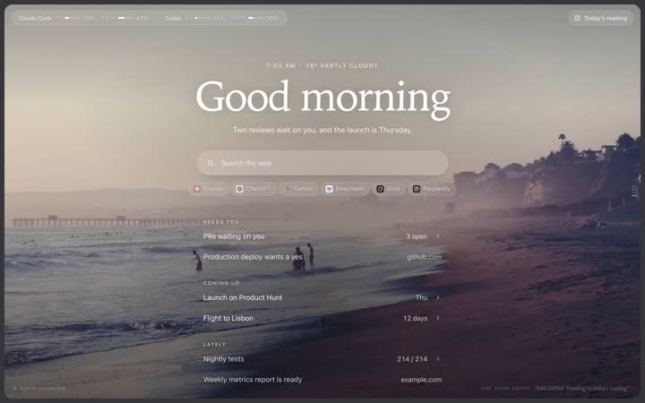
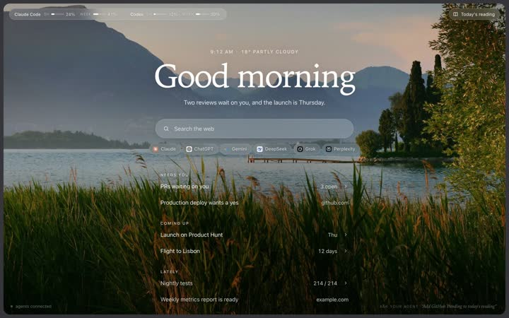
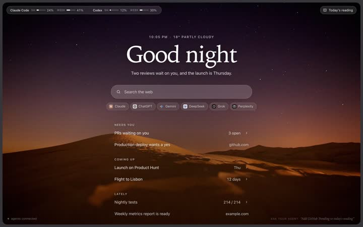

For people who work with AI agents
A calm new tab
your agents run.
Every time you open a tab, one quiet page: what needs you, what's coming up, what just finished. Your agents keep it current, so you don't have to go looking.

Set up in one paste
No settings screens. Your agent asks what you care about, sets the page up, and keeps it fresh on a schedule you choose.
-
1
Install
Clone the repo, link the
tabcommand, and load the extension in Chrome. It also works as a plain page in any browser.git clone https://github.com/anup-a/stilltab cd stilltab && npm linkThen
chrome://extensions, Developer mode, Load unpacked, pickextension/. -
2
Paste one prompt
Your first new tab shows a short prompt. Paste it into Claude Code, Codex or any agent in your terminal. It asks which parts of your life to look after, how often to refresh, and what the page should show.
-
3
It stays current
Your agent runs on its own every few hours. Each run it looks at your repos, calendar, inbox and notes, decides what matters most right now, and tidies the page.

One quiet page, not another dashboard
Short lines instead of widgets. At most a handful at a time. Anything that's done leaves on its own.
Needs you, coming up, lately
Every item is one line with a short number: 3 open, 12 days, 214 / 214. Click to open the details. Tick, dismiss or reorder, and your agent sees it next run and adapts.

Today's reading, in a side panel
Headlines from the topics you pick, mixed so no one source takes over, refreshed once a day. It opens beside whatever you're reading and stays put as you switch tabs.

Works with any agent
Claude Code, Codex, Gemini CLI, OpenCode, or anything that can run a shell command. They all talk to the page through one small CLI.
Your plan usage, at a glance
How much of your Claude Code and Codex limits you've used this session and this week, with reset times on hover.
Private by default
The page talks to a small server on your own machine. Your tab's contents stay in a file on your computer, not in someone's cloud.
Yours to shape
Weather, AI shortcuts, frequently visited sites, the reading panel: turn each on or off by asking your agent, or with one command.
It follows the light
Dawn, day, dusk and night, each with its own photo. Or a soft gradient sky if you'd rather.



Built for agents
A tiny command line any agent picks up from one help page. Pin a line, update a number, leave a one-line brief.
Read the setup guide# what your agent runs
tab brief "Two reviews wait on you, and the launch is Thursday."
tab pin review --title "PRs waiting on you" --items '[…]'
tab pin trip --title "Flight to Lisbon" --stat "12 days"
tab set ci --data '{"value":"214 / 214"}'
tab events # what you ticked, dismissed or opened
# and how it keeps going
tab routine set --every 2h --hours 8-22 --agent claude